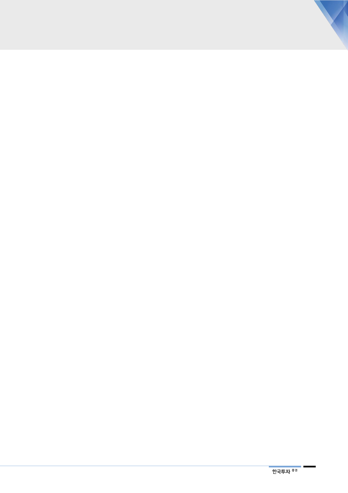

M&A를 통해 top-tier
CDMO로 도약
AMPAC, 2013~2018년
매출 연평균 10.5% 증가,
2019년 30% 이상 증가
2020년까지 생산 캐파
160만리터로 확대 예정
2. AMPAC 인수로 글로벌 top-tier 생산업체로 도약
SK바이오텍은 합성의약품 CDMO업체로 제약회사의 합성의약품 생산과 개발을
담당한다. SK바이오텍은 경구용 제품을 넘어 향후 주사제 시장확보와 DP(후공정)
영업 진출을 위해 활발한 M&A를 시도 중인데, M&A를 기반으로 2025년에는
매출 3.5조원을 육박하는 글로벌 top-tier CDMO 도약이 목표이다. 2013년
CDMO 사업 전략을 수립 후 2014년 세종공장을 건설하고 2017년 1차 증설에
돌입, 2017년 BMS의 아일랜드 공장 설비 인수, 2018년에는 AMPAC을 인수했
다.
AMPAC은 글로벌 대형 제약사들의 항암제와 중추신경계, 심혈관 치료제 등에
쓰이는 원료의약품을 주력으로 생산하는데, 과거 AMPAC의 매출액은
2013~2018년 연평균 10.5% 증가했는데 2019년은 주요 고객사의 생산 확대로
30% 내외 증가가 예상된다. SK는 작년 6월 SK바이오텍을 통해 BMS(브리스톨
마이어스스큅)의 아일랜드 공장을 인수했는데, 이번 인수로 유럽과 미국 양쪽에
생산 기지를 구축했다. 트럼프 행정부 출범 이후 미국 의약품의 수출 장벽이 높아
지는 점을 고려하면 SK의 선제적 의사결정이 향후 미국 시장 확대에 디딤돌이
될 것으로 판단한다.
AMPAC 인수 후 SK바이오텍의 원료의약품 생산 캐파는 기존 40만리터에서
100만 리터로 확대됐다. SK바이오텍이 운영하는 세종공장 16만리터, 대전공장
16만 리터, 아일랜드 공장 8만 리터이고, AMPAC의 미국 생산용량 60만리터(캘
리포니아, 텍사스, 버지니아)를 합산 결과이다. 글로벌 제약사들이 대형
CMO/CDMO를 통한 안정적인 제품 생산을 선호한다는 점에서 CDMO 업계의
대형화는 필수적이다. 생산시설이 없는 신생 제약사들이 늘고 있다는 점도 SK바
이오텍에게는 기회이다. 따라서 SK바이오텍은 2020년까지 의약품 생산 캐파를
확보된 100만 리터에서 160만 리터로 추가 확대할 계획이다(한국 80만리터, 아
일랜드 10만리터, 미국 70만리터). 생산 캐파 기준 업계 1위인 스위스의
Siegfried의 캐파가 155만리터임을 감안하면 SK는 2년 내 업계 top-tier 진입
이 예상된다.
13